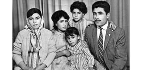
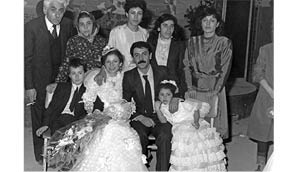
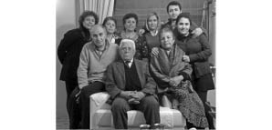

“Oğlum 20 Yıl İsviçre’de Yaşadı, Ancak Bir Defa Görebildim.”
Güher Güler42 / Mehmet Ali Güler43
12 Eylül döneminde oğlum Ali ve damadım Ali Rıza içeri alındılar. Ali 20 yaşındaydı. EGO’da çalışıyordu. Dev-Yol davasından yargılandı. 2.5 sene Mamak Cezaevi’nde yattı. Dört çocuğumun 3’ü yurtdışına gitti. İki kızım Perihan ve Sercan yurtdışına çıkmak zorunda kaldılar. Ağabeyleri Ali de tahliye olduktan sonra tekrar arama emri çıkınca yurtdışına gitti. Hepsi de aynı siyasettendiler. Sadece en büyük kızım Mercan Türkiye’de kaldı.
Biz Ankara’daydık. Kocam memurdu, memur hayatı yaşıyorduk. Kiracıydık, oradan oraya taşınırdık. Çalışan bir tek eşimdi. 4 çocuğumuza bakıyorduk. Akrabalarımıza gidip gelirdik.

Güher ve Mehmet Ali Güler çocuklarıyla
1980’de çok sıkıntı çektik. Gece saat bir olur, kapı çalınırdı, korkumdan tuvalete girerdim. Oğlumu gözaltına almışlardı ama eve geliyorlar, bize nerede olduğunu söyleyeceksin diyorlar, içeriyi basıyorlardı. Sandığımda ne varsa döküyorlardı. Sandıkta ne olur ki? Çarşaf var. Senin evinde çarşaf yok mu dedim bir gün polislere. Başını niye sardın diye sorarlardı. Sizin yüzünüzden başım ağrıyor derdim. Mercan’ın çocukları küçük. Bir oğlan, bir kız. Çocuklar giriyor perdenin arkasına saklanıyorlar korkularından. Polislere dedim ki, çocuklara bakın, nasıl saklanıyorlar korkularından. Sizin çocuklarınıza böyle etseler ne yaparsınız dedim. Sonra birisi dedi ki, gel çocuğum, korkma gel. Çocuk çıkmadı perdenin arkasından. Az çekmedik ki. Eşyalar, fotoğraflar gömüldü bahçede, ne resimlerimiz vardı, çoluğun, çocuğun. Hepsini gömdük Ankara’daki evin bahçesine. Bilmem çürüdü mü, çıkarttılar mı? Kimini yaktık, kimini gömdük. Bir seferinde eşimi ve küçük kızımı götürdüler. Yaklaşık 1 hafta yattılar. Sonra geri geldiler. Çok şükür ki bir şey olmadı. Her allahın günü gelirlerdi eve. Haftada bir defa olsa azıcık uyku uyursun. Şimdi bile kapı gece çalındığında sıçrarım. Eğer ses gelirse, tanıdık olursa açarım yoksa yok.
Oğlum 2.5 yıl yattı. Onu Rize’de gözaltına aldılar. Nişanlıydı, Rizeliydi kız. Rize’den aldılar. Ankara’ya haber verdiler. Eşim gitti, içeriye almışlar karakolda. Eşim, bir göreyim demiş, göstermemişler. Sonra Ankara’ya sevk ettiler cezaevine.
Cezaevinde gördük ilk defa görüşe gittiğimizde. Benim okumuşluğum yok. Zordu tabii, ağlaya ağlaya geliyorduk. Görüşlerde jandarma başımızda dikiliyordu, bana bakıyordu, bazen dövüyorlardı, bakmayacaksın diyorlardı. Epey bir zaman göstermediler zaten. Cezaevine her hafta gidiyorduk, perşembe günleriydi, görüş günü. Gittiğimde gördüm ki iki tane jandarma koluna girmiş, işkence yerine götürüyorlar. O zaman üzüldüm. Dışarıda bir yere götürdüler nereye götürdülerse. Ancak koluna girmişler, götürürlerken gördüm. Bir de döndü bana baktı. Ben ağlarken gayrı daha dönmedi. Ondan sonra göstermediler, biz de geri eve geldik. Fiziksel olarak bir hasar yoktu. İnsanlar zaten hep solgun görünüyorlardı. Cezaevi kapısında bekliyorduk tabii. Kulübelerde bekliyorduk, sırayla giriyorduk. Çocuklarımız işkence görecek diye sıkılıyorduk, korkuyorduk.
Cezaevlerinde, çocukları içeride olan arkadaşlarım vardı, birbirimizle anlaşıyorduk, görüşe giderken insan ağlıyor. Onları gördükçe dayanamıyorduk. Zor oluyordu. Onların çocukları da içeride. Şimdi görüşemiyoruz birçoğuyla, Ankara’da kaldılar.
Çocuklara acıyordum ben. Hâlâ da çocuklara işkence yapıldığını duyunca çok acıyorum. İyi ki Ali geri geldi, bir can kaybı olmadı çok şükür! Arkadaşlardan olsun, komşulardan olsun onların çocukları da bizim çocuğumuz. Benim kardeşimin oğlu da çok yattı cezaevinde. Nato Yolu’nda oturuyorduk, bir gün kapının önünde bir çocuk gördüm, baktım ki yüzüne bir gocuk geçirmiş polisler, bizim kapının önünden geçiriyorlar. Cezaevinden çıkartmışlar da kim ne yaptı, kim ne etti, söyleyeceksin diye gezdiriyorlar. Kim adam öldürdü, illa söyleyeceksin diyorlarmış. Beş sene de o yattı Mamak’ta.
Keşke hiç akşam olmasa derdim. Bir sefer gidelim başkalarının evinde yatalım dedik eşimle ben, gittik onlar da koymadılar bizi içeri, istemediler. Halbuki çocukların tanıdığıydı onlar. Açmadılar kapıyı ama evde olduklarını biliyorduk. Biz de geri geldik ne yapalım. Götürürlerse götürürler dedik. Bir daha da görmedim onları lanet olsun, görmedim. Yalnızca benim oğlanın kaynanasına giderdim. Saat 5-6 olduğunda Mamak’a inerdim. Onun evi Mamak’taydı. Gider orada yatardım, sabah olunca gelirdim. Onların kızları da aynıydı. Onlar da korku içindeydiler, ne yapsın?
Devrimci çocuklar bizde kalırlardı bazen. Bizim evde bir kapı burada, bir kapı öte taraftaydı. Orada kapı çalınırsa, çocukları diğer taraftan sevk ederdik. Bir keresinde beş çocuk gelmişti. Yeri yok, yurdu yok. Ne yapsın çocuklar. Nereye gitsin? Arkadaşları, tanıdık. Benim beyim öyle merhametlidir. Dedi ki, ben kapıda bekleyeyim, siz rahat uykunuzu uyuyun. Arka kapıda nöbet tuttu. Çok güzel çocuklar vardı. Çatılardan hoplar giderlerdi.
Oğluma niye böyle yaptın, niye bu işlerle uğraştın diye kızdık tabii. Sen de çektin, biz de çektik dedik. Komşularımdan tepki görmedim. Ankara’da Nato Yolu’nda, gecekondu mahallesinde yaşıyorduk, komşularımın da çocukları içerideydi, o mahalle hep aynıydı. Dolmuşla, otobüsle gidiyorduk Mamak’a. Tanıdıklarımız, ailem de vardı tabii, kardeşimin oğlu da vardı, onlar bize destek oluyorlardı. Maddi olarak da zarara uğradık. Oğlum işe gidemedi, babadan bekliyorduk sürekli olarak.
Hiç oralı olmayanlara kızdık tabii. Ne güzel, rahatlar, bak bizimkiler işkence çekiyorlar, bunlar utanmıyorlar da dedik. Halbuki çocuklarımız sırtlarında milletin kömürünü taşıyorlardı. Gecekondu bölgesinde yaşayan insanlara yardım ediyorlardı. Yolları yok, yol yaptılar. Kömürleri gelecek, kömürlerini taşıdılar. Ama onlar da kıymet bilmedi, lanet olsun! Ondan sonra da çocuklara düşman oldular. Sahip çıkan oldu tabii ama çıkmayan da çok oldu. Etmeyelerdi, yapmasalardı dediler. Ama zamanında yalvarıyorlardı, yolumuz yok, suyumuz yok diye. Onlar hep unutuldu.
İstanbul’a Göç Ediyoruz
Oğlumu Mamak’ta nişanlamıştık. Tahliye olduktan sonra da Ankara’da düğün yaptık. Çıktıktan sonra da buraya, İstanbul’a taşındık. Mecburiyetten geldik. Evi barkı her zaman yokluyorlardı. Biz de çok korkuyorduk.
Ankara’da 30 yıl yaşadık, sonra İstanbul’a geldik. Biz buraya geleli 10 seneyi geçmiştir. Zor oldu, kimseyi tanımıyorum, bilmiyorum, komşu yok. İlk taşındığımızda ben küçük kızımla bir eve taşındım. O gece yattık ikimiz, acemiyiz, tanımıyoruz kimseyi de. Zor oldu tabii biraz. Eşim gelmedi, Ankara’da çalışıyordu ya, izin alamadı. Kartal’da oturuyorduk. Komşular geliyor, sen onu tanımıyorsun, o seni tanımıyor. Biraz konuşa konuşa, biraz tartışa tartışa birbirimizi tanıdık. Niye geldiğimizi sormadılar. Biz de herkese söylemedik, her adama söylenir mi ki? Amcamın oğlu vardı, en üst katta. Ne yapsınlar çocuklarımız, acemilik çektik. Okulları bitirmişlerdi. Küçük kızım daha okumuyordu, bir yere girdi çalışmaya. Orada da zor oldu, babası çıkarttı.
Perihan 1983’te yurtdışına çıktı, ilk defa 1992’de geri dönebildi. Sercan, eşi sebebiyle çıkmıştı, o da siyasi sebeplerdendi.
Perihan önce Yunanistan’a gitti, sonra 1985’te Hollanda’ya geçti. Sercan da 1989’da İsviçre’ye geçti. O zaman hep mektupla haberleşiyorduk. Ben okuma yazma bilmediğimden torunum yazıyordu mektupları ve gelen mektupları da okuyordu. Perihan, Yunanistan’dayken komşunun telefonundan arada kısa görüşmeler yapabildik ama esas olarak mektuplaştık.

Ali Güler ve ailesi Ali’nin düğününde
Oğlum tahliye olduktan sonra evlendi ve İsviçre’ye gitti. 20 sene kaldı orada. Şimdi artık geri döndü Ankara’da yaşıyor. Ben bir defa gittim İsviçre’ye görmek için. Kalpten ameliyat oldu. 20 yıl boyunca görmemek çok zor oluyor. Bir göreyim diye çaba gösteriyorsun, çok üzücü, çok acılı oluyor. İlk oğlum gitti, sonra eşini götürdü. Kaçarak girdiler İsviçre’ye. İstanbul’da düğün yaptık, ev tuttuk, eşya falan aldık. Ondan sonra dedi ki, ben çalışmaya gidiyorum, bize de söylemiyor nereye gittiğini, üzülürüz diye. Bir gün gittim ki evde hiçbir şey kalmamış. Dedim ki gelin nerede Ali? Ali yurtdışına gitti dedi. Orada ağladım. Eşyalarını da ona buna dağıtmış. O da kiradaydı Kartal’da. Kimseyi tanımıyordu İsviçre’de, arkadaş ne arasın? Kendi başına kalktı, gitti. Yurtdışında bir kızı, bir de oğlu oldu. Oğlum orada bir inşaatta çalışıyordu. Eşi de çalışıyordu.
12 Eylül Davası
Kenan Evren mi? Cezaevine girse, ağır ceza alsa sevinirim. Çektiğimiz acıların karşılığı olur. Ettiklerini unuturum hiç değilse, şimdi karşımda duruyor çoğu. Şeker hastası olduk, tansiyon hastası olduk, korkudan her şey olduk, dizlerim tutmuyor, bizim adam hasta. Bir de unutkanlık var.
Elbet düşünüyorum olanları. Korku insanın aklından çıkmıyor. Aklıma geliyor. Allah daha göstermesin diyoruz.
* * *
Ben Esenboğa’da çalışıyordum, ailem yanımdaydı. Oğlum Ali içerideydi, hiçbir suçu da yoktu. Bir adam ölmüş, oğluma dediler ki, bunu sen öldürdün. Halbuki bir şey de çıkmadı. Meğerse iki tane Ali Güler varmış, soyadı tutarmış. Eskişehirli bir Ali Güler varmış. Onu getirdiler, o çocuğu da 27 ay yatırdılar. Bu olay yüzünden kızım ve ben de bir hafta yattık.
Esenboğa’da, Emniyet Amiri bir arkadaşım vardı. Gidelim, ne oluyor bir soruşturalım dedi. Beraber gittik onunla. Oğlumu görmek istedim, Eskişehir’de birini öldürmüş dediler. Dedim ki oğlumun öldürmesine imkân ve ihtimal yok. Fakat eğer işkenceyle dedirttiyseniz başka bir şey, bilemem dedim. Açıkça söyledim yani. Bir şeyler getireceğim, verir misiniz çocuğa diye sordum. Oğlunu göstermeyiz fakat eşyaları kapıdan verirsin dediler. Götürdüm verdim, gerçi ona da vermemişler, kendileri yemişler.
Bir tane komşum vardı. İşkencede demiş ki, Ali’ye filan yerden silah verdiler, gördüm. O da kendini kurtaracak ya, ondan sonra beni götürdüler. Bana işkence yaptılar, ondan sonra biriyle yüzleştirdiler. Ne oldu? Diyor ki Mehmet Ali Bey’in kapısının önüne bir tane adam gelmişti, evde ne varsa onları verdi. Peki dedim ben, nerede oturuyormuş, o neredeymiş? Yanıt veremedi. Yukarıya çıkarttılar beni, yukarıya çıkınca bu sefer tek ayak üstünde duracaksın dediler. Tek ayak üstü durdum, baktım bazı arkadaşlar da var, onlar da orada yatıyorlar, işkence de görüyorlar. Çocuklara tam orada işkence ediyorlar. Neyse ben de biraz ayak üstünde durdum ondan sonra aldılar beni koğuşa, ufak yerler ya, orada 1 hafta yattım ben. Baktılar ki bir şey bulamıyorlar, bıraktılar.
Lanet bir dönemdi. Hiçbir şeyimiz yok bizim. Biz vatandaşız, bana polis diyordu ki, seni emekli ettirmeyeceğim. Nasıl olabilir böyle bir şey? Çocuğun ziyaretine gidiyoruz, yemek vermeyi bile çok görüyorlar. Ben de yattım orada, kuru ekmekten başka bir şey vermiyorlardı. Aynı itin önüne atar gibi kuru ekmek veriyorlardı. Bir gün bana kazmayla bahçeyi bellettiler tabanca var mı diye. İş mi ararsın?
Benim 2 kardeşim vardı, ben bazen kazancımın bir kısmını onlara gönderiyordum. Bazı komşularım ihbar ediyorlardı, bu parayı nereden alıyor diye. Halbuki 3 tane şirketin muhasebesini yapıyordum ben.
12 Eylül Davası
İnşallah Evren’i ve Tahsinkaya’yı içeri atarlar diyorum ama başbakan kurtarır onları. Ne gelecek başlarına? Allah süründürsün, başka ne diyeyim. Ben diyorum, bu hükümet gitmedikçe ne içeri koyarlar, ne bir şey yaparlar onlara. Kenan Evren, paşa gibi geziyor işte. O zaman da paşaydı, şimdi de paşa. Allah bir şey yaparsa o yapıyor yoksa... Bu hükümet durduğu müddetçe, bu halk da bilinçli olmadığı müddetçe biz bu şekilde sürünürüz. %80’i zavallı fakir, %20 varsa zengin var. Bu gidişatta bir değişiklik olup olmayacağını bilmiyoruz. Nasıl olacak ki? Bu halk koyun gibi. Adam iki çuval un vermekle bütün oyu alıyor, iki oy, iki oy. Ona tenezzül eden halk imkân yok kendini düzeltip de bunlardan kurtulmaz. Şu zaman olmuş daha başbakan kömür dağıtıyor, bilmem ne dağıtıyor seçimlerde. Bunu nereden dağıtıyor? Doğrudan doğruya bütçeden dağıtıyor, cebinden mi dağıtıyor? Öyle misal. Bir de yaşım da geldi zaten, göçer gidersek kurtarırız. Başka çaresi yok. Allah çocuklara zeval vermesin.

Güher ve Mehmet Ali Güler ailesiyle birlikte